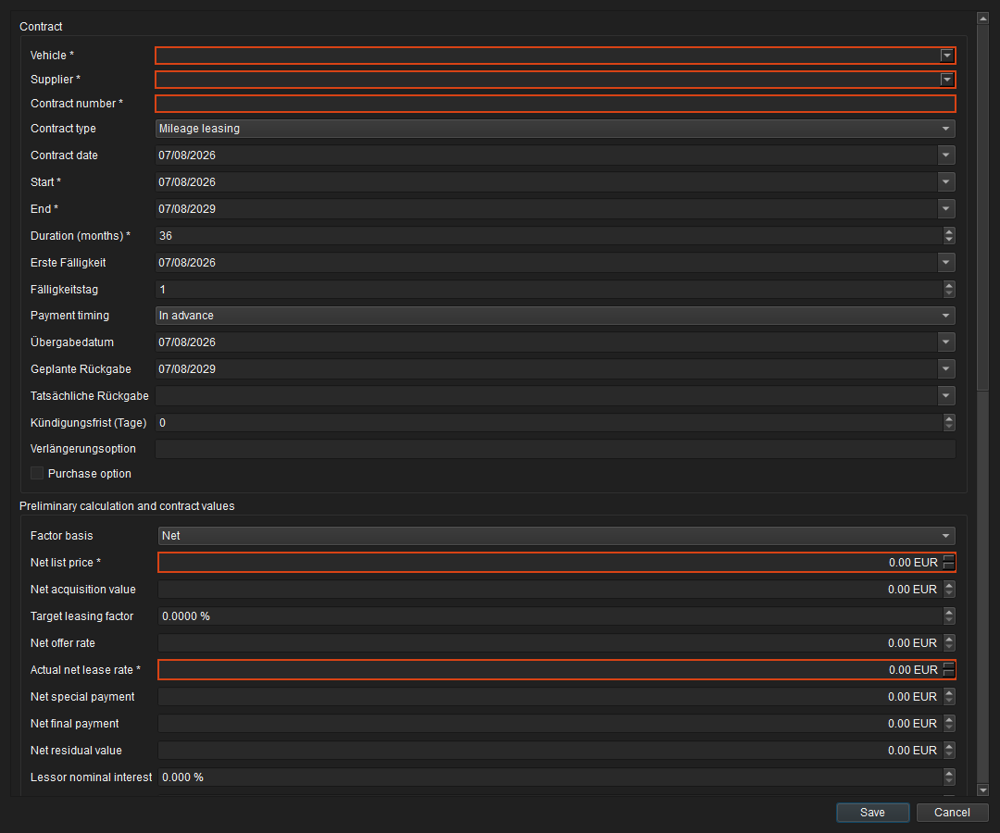
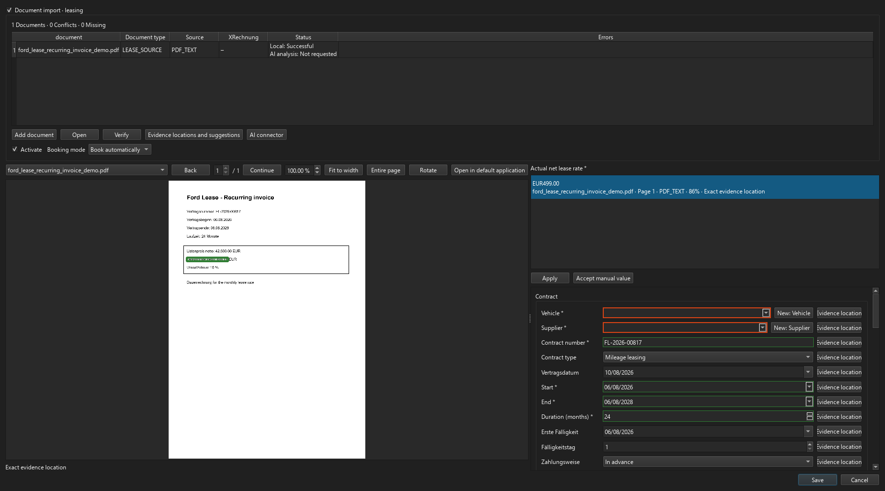
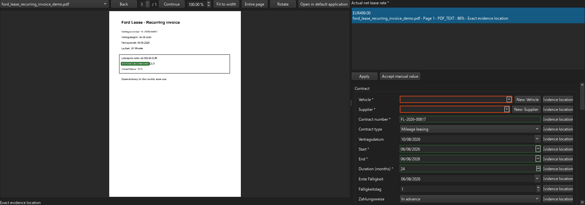

Lease contracts¶
Lease management combines contract terms, pre-calculation, payment schedule, contract documents, recurring invoices and actual costs from supplier invoices. Manual contract management is available in every edition. Document analysis, XInvoice, OCR, local ML and the optional AI connector follow the Pro/Enterprise licence boundary; the Report dashboard is likewise available in Pro and Enterprise.
Overview and contract record¶
Open Fleet → Lease contracts. Filter the overview by contract number, vehicle, supplier and status. New starts manual entry. From document starts a temporary document-assisted intake. Double-click or Open lease contract opens the contract in a dedicated work tab; reopening an existing contract focuses its tab instead of creating a duplicate.
 Figure: Lease overview with search, status filter, and manual and document-assisted creation.
Figure: Lease overview with search, status filter, and manual and document-assisted creation.
The contract record separates Contract, Calculation, Payment schedule, Documents, Supplier invoices, Recurring invoices, Costs/Credits and Audit. This keeps vehicle, supplier, period, rate and status distinct from actual postings and archived evidence.
 Figure: Contract record with anonymised vehicle reference and M-data evidence.
Figure: Contract record with anonymised vehicle reference and M-data evidence.
Current end-to-end workflow¶
The highlighted evidence heading identifies the currently selected field. The heading, evidence rows, evidence quality and loading status follow the signed-in user's language after a language change and after document preview completes. Quantities, numbers and dates follow the region independently. The current selection and explicitly accepted evidence are retained. Document quotations retain their original wording.
The current workflow uses the same lease form for manual and document-assisted creation. OCR, XInvoice and AI provide proposals only; vehicle, supplier, contract values, recurring-invoice phases, activation and posting mode are always confirmed in one final review. Post automatically does not create all future instalments as costs immediately: FLEET Mira prepares the monthly occurrences and posts each one only on its due date.
flowchart TD
A["Lease overview"] --> B{"Creation method"}
B -->|"New"| C["Complete the shared lease form manually"]
B -->|"From document"| D["Add contract, recurring invoice, PDF, image or XML"]
D --> E["Evaluate PDF text, OCR and XInvoice data locally"]
E --> F{"Required value missing, conflict or low confidence?"}
F -->|"Yes and consent granted"| G["AI connector adds reviewable proposals"]
F -->|"No or no cloud consent"| H["Use local proposals or complete values manually"]
G --> I["Review document on the left and form on the right"]
H --> I
I --> J["Accept concrete evidence and resolve conflicts"]
J --> C
C --> K["Review vehicle, supplier and contract values"]
K --> L{"Enter a recurring invoice?"}
L -->|"No"| M["Prepare contract for final review"]
L -->|"Yes"| N["Edit amount phases and additional components"]
N --> O["Confirm periods, net, tax, gross and component assignments"]
O --> M
M --> P["Combined final confirmation"]
P --> Q{"Activate lease contract?"}
Q -->|"No"| R["Contract remains a draft; recurring invoice may be PENDING_ACTIVATION"]
Q -->|"Yes"| S["Activate contract and create payment schedule"]
S --> T{"Recurring-invoice posting mode"}
T -->|"AUTO – default"| U["Prepare monthly occurrences idempotently"]
T -->|"MANUAL"| V["Provide due occurrence as READY_FOR_REVIEW"]
U --> W{"Is the period already due?"}
W -->|"No"| X["Visible only in payment schedule and recurring invoices"]
W -->|"Yes"| Y{"Complete and conflict-free?"}
Y -->|"Yes"| Z["Post monthly occurrence automatically"]
Y -->|"No"| AA["REVIEW_REQUIRED with an understandable correction action"]
V --> AB["User reviews and posts"]
Z --> AC["Costs/credits, planned/actual reconciliation and accounting export"]
AB --> ACThe most important transitions are:
- Without activation, the contract remains a draft; an already confirmed recurring invoice waits as
PENDING_ACTIVATION. - In
AUTOmode only due, complete and conflict-free periods are posted. Future periods remain visible in the payment schedule and the Recurring invoices tab. READY_FOR_REVIEWrequires manual posting;REVIEW_REQUIREDsignals a business or technical conflict and prevents an automatic partial posting.- A period appears under Costs/Credits and enters planned/actual reconciliation and accounting export only after it has been posted.
Manual entry¶
The existing lease form remains the shared destination for manual and document-assisted creation. One contract belongs to exactly one vehicle and one supplier. Required fields carry a trailing *:
- vehicle and supplier;
- contract number;
- start, end and term;
- net list price;
- actual net lease rate.
List price and actual rate must be greater than zero. Empty required values receive a red border and a localised hint. Date, number, currency and percentage fields use the authenticated user's region; ISO dates, integer cents and basis points remain authoritative internally.
Excess and shortfall mileage prices use EUR/km with four decimal places, for example 0.1138 EUR/km and 0.0375 EUR/km. They are stored precisely as micro-euros rather than rounded whole cents. OCR and AI distinguish finance rates from adjacent service rates; explicit locally readable evidence checks the scaling of AI proposals. Migration preserves the value of existing cent-based prices; previously accepted incorrect prices must be checked again against the original.
Numeric fields can be cleared completely with the keyboard. Empty is not the same as 0: required fields remain marked red and must be completed before saving. The optional Due day can remain empty, including after reopening; monthly due dates continue to follow the First due date.
The mouse wheel only scrolls the contract area. The active editor, cursor position and existing text selection remain unchanged when scrolling down and back up. This applies to manual creation, editing and document-assisted creation. Clicking another field or using Tab/Shift+Tab changes the input focus.
Contract date and handover date default to the current date. The start initially follows the contract date. End and planned return are derived from start and term, while the first due date follows the start. Contradictory inputs are never silently overwritten.
The vehicle selector searches vehicle number, registration and VIN. The supplier selector searches supplier number, name and creditor number. Only an explicitly selected result is stored.

Figure: Shared lease form with required markers, regional editors and dependent contract dates.Creating from documents¶
From document accepts a contract, recurring invoice, PDF, image, standalone XInvoice XML or hybrid PDF/XInvoice. Multiple documents can contribute to one intake, but an intake creates exactly one contract for one vehicle and at most one primary recurring invoice.
flowchart TD
A["Lease overview"] --> B{"Creation method"}
B -->|"New"| C["Manual lease form"]
B -->|"From document"| D["Select contract, recurring invoice, XML, PDF or image"]
D --> E["Archive the original temporarily and immutably"]
E --> F{"Structured invoice data available?"}
F -->|"Yes"| G["Extract and validate XInvoice"]
F -->|"No"| H["PDF text or local OCR"]
G --> H
H --> I["Rules and local ML"]
I --> J["Merge documents and match master data"]
J --> K{"Missing, conflicting or uncertain?"}
K -->|"Yes"| L["Optionally approve AI connector per document"]
K -->|"No"| N["Transfer proposals to the lease form"]
L --> M["Cloud proposals with source and confidence"]
M --> N
N --> O["Split review: document left, lease form right"]
O --> R["Field or candidate focus shows document, page and all evidence locations"]
R --> S["Blue preview; user accepts one concrete evidence location"]
S --> P["Explicit final confirmation"]
P --> Q["Create contract and optional master data atomically"]Source precedence prevents an uncertain proposal from silently replacing better data: valid XInvoice data is authoritative for invoice and tax values, followed by embedded text and local rules, the bundled PDFium/Tesseract OCR runtime, and finally approved AI proposals. Every transfer to a cloud provider requires explicit consent for that document. A missing OCR component produces a visible technical failure rather than SUCCEEDED with an empty result.
While document analysis is running, the document list, viewer and Cancel remain available; contract fields and Save are locked. A business-level analysis failure does not prevent manual completion. The document list shows document type, source, XInvoice status, analysis status, progress and errors. Local and AI analysis appear on separate lines in the status column. The additional progress indicator visualises queued work, running processing as an animated bar, and terminal success or failure for each document. Without cloud approval it shows AI analysis: Not requested; a running or completed request also names the provider. If several AI runs exist, the latest request is authoritative. Verify validates XInvoice content in PDF, XML and hybrid documents. A subsequent local location search for legacy AI results runs separately in the background: Evidence locations: Being prepared and an animated bar remain visible while the form and document navigation are already responsive again.

Figure: Maximised responsive review screen with document controls, highlighted evidence, candidates and the unchanged lease form.Conflicts, missing values and evidence¶
Initially, the candidate list is empty and the document is shown as a whole page. Clicking a form field, deliberately navigating with Tab, or choosing Evidence location activates its proposals and document highlights. The highlighted heading above the list identifies the active field. Scrolling, automatic form refreshes and changes to which fields are visible do not change the candidate list or the last preview.
An actual click or Tab/Shift+Tab keystroke is required, not merely a form focus change. The mouse wheel changes neither the active input field nor the proposals or visible document area.
Document-assisted entry no longer opens a separate conflict window. The creation window opens maximised, verifies the actual Windows screen geometry after its first show, and can still be minimised and restored through the normal window controls. At 1920×1080 the initial split is approximately 55/45; a stored form pane that is too narrow is raised to a usable minimum width. The more compact document list uses about 20 percent less height. The selected original retains sufficient room on the left while Evidence locations and suggestions, editors and field actions remain visible without horizontal clipping on the right. The splitter position is stored per user within that usability boundary. Document selection, page, zoom, fit, rotation and opening in the default application remain available.
The mouse wheel scrolls the form content while the pointer is inside the contract area. If the pointer is over a date, integer, decimal, amount, percentage, or selection editor, its value is not changed; the wheel gesture is passed to the surrounding contract area. Numeric editors have no increment/decrement buttons and values are entered directly with the keyboard. Clearing a candidate selection or deleting the input with the keyboard leaves the numeric field visibly and internally empty until the user deliberately enters a value.
Clicking Evidence location or a candidate row automatically opens the matching document, page and highlight. Every physical evidence occurrence uses its own scaling-safe row, even when the same value appears on several pages or in several documents. The regionally formatted value appears above document name, page, analysis source, confidence and location quality, with an individual Apply button on the right. Row height follows font and display scaling so multiple candidates cannot overlap. Focus or hover highlights the considered location in blue but does not change the form. Apply and activating the candidate checkbox use the same operation: value and concrete occurrence ID are stored together, the check mark is enabled, and row and document overlay turn green. Clearing the active checkbox removes both selection and field value. An explicit empty state prevents polling or a later analysis from silently restoring the proposal. The selection survives field changes and restores its document, page and focus when the field is revisited. Editing the form directly or choosing Accept manual value stores the manual value and automatically removes the prior evidence selection.
An unambiguous proposal with exactly one occurrence is selected as AUTO within the transient intake. Its checkbox, candidate row and overlay immediately show that state. With multiple physical occurrences or a business conflict, no concrete location is implied and explicit selection remains required. An occurrence explicitly accepted by the user is stored as USER. The whole contract still receives its binding confirmation only in the final confirmation dialog.
Final validation considers both stored evidence selections and the form values that are actually visible and explicitly confirmed at the end. Selecting an existing vehicle or supplier, or staging a new one, also confirms the associated master-data fields such as model or supplier address. Values that were already reviewed therefore do not block finalisation a second time. If a genuine document conflict remains outside these review surfaces, the message uses localised form labels such as Contract date or Model and returns to the affected field; technical schema names are never shown.
Colour represents user state: the focused candidate preview is blue, the accepted location is green and other visible occurrences are muted grey. Independently, line style represents technical quality: exact locations use solid outlines and locally approximated text/value matches use dashed outlines. Equal ambiguous matches retain every locally verifiable coordinate; only genuinely unavailable locations receive no fabricated box. Values available only in XInvoice XML retain their BT reference or XML path. Derived values name their input fields and reuse those fields’ evidence.
Editor borders use four unambiguous states in document-assisted entry: red (#d84315) means a required value is missing, orange (#ef6c00) means a required proposal has unresolved multiple candidates or occurrences, green (#2e7d32) means a required value was selected automatically and unambiguously, explicitly accepted, or entered manually, and blue (#1976d2) means an optional value came from document analysis or manual input. A valid zero such as 0% VAT remains distinct from a genuinely empty editor.
The viewer, candidates and field binding use the domain-neutral DocumentReviewWorkspace. The backwards-compatible extension of document-evidence-anchor-v1 includes document ID and SHA-256, a stable occurrence ID, one-based page, normalised top-left rectangles, source text, optional BT/XML reference, method, quality, confidence and model version. The concrete temporary field selection is stored backend-neutrally with origin AUTO or USER in selection_json. An explicitly cleared field receives a null tombstone in resolution_json. Discard or successful finalisation removes these session states after confirmed training/audit evidence has been retained. The same review area can therefore be reused later for supplier invoices and traffic offences without introducing lease dependencies.
flowchart LR
A["Focus field or candidate"] --> B["Select document and page automatically"]
B --> C{"Locatable evidence occurrences?"}
C -->|"One or more"| D["One candidate row per physical location"]
C -->|"No"| G["Keep source visible; fabricate no box"]
D --> E["Focus: blue preview"]
E --> H{"Explicit user action"}
G --> H
H -->|"Apply or activate checkbox"| I["Store value and occurrence ID; green + check mark"]
I --> L{"Checkbox remains active?"}
L -->|"No"| N["Clear selection and field; store null tombstone"]
L -->|"Yes"| F
H -->|"Accept manual value"| M["Store value; remove evidence selection"]
N --> F{"Finish"}
M --> F
F -->|"Confirm"| K["Finalise"]
F -->|"Cancel and discard"| J["Delete temporary intake and documents"]
Figure: A two-line candidate with document and page provenance; the preview highlights its position without changing the form value before explicit acceptance.Vehicle and supplier are selected only in the main form. If no unambiguous match exists, New: Vehicle and New: Supplier are available beside their selectors. These records are initially staged and shown with number and description in the final summary; no second master-data creation is offered there. The shared final confirmation creates them. VIN, registration, supplier identifiers and internal numbers are checked again for duplicates immediately before saving.
Document-assisted entry is a modal, temporary session, not a resumable draft. Cancel, closing the window or cancelling final confirmation all use the same discard path after a warning. No intake, documents, analyses, locations or number reservations remain visible afterwards. The worker also cleans up abandoned, non-finalised sessions.
Recurring invoice and posting mode¶
Contract first, recurring invoice later¶
The lease contract and recurring invoice do not have to be available in the same intake. A contract can first be created manually or through From document. If it is stored as a draft, it must be activated from the contract file with Activate before the later assignment.
If no recurring invoice is available yet and the contract document contains no explicit first due date, FLEET Mira uses the recognised contract start as First due date and derives the due day from it. This also allows a contract that started in the past to be stored without the temporary current-date default creating monthly instalments outside the contract term. A first due date recognised from the document or changed by the user always takes precedence. The Recurring invoice section remains disabled in this case; detected invoice or phase proposals are not stored with the contract.
There are two equivalent routes for a recurring invoice that arrives later. Open the active lease contract and select Recurring invoice from document when vehicle, supplier and contract are already known. PDF, image, XML or hybrid PDF then opens the same split document review as contract creation. Master-data references are fixed while amount periods, additional components, tax and posting mode remain reviewable and editable. Accept as verified creates the supplier invoice and contract assignment atomically.
Alternatively select Supplier invoices → From document and invoice kind Recurring invoice when the contract assignment is still open. A recognised active contract is only proposed and must be confirmed explicitly. Without an assignment the recurring invoice can be stored and later linked through Assign recurring invoice. Import XRechnung uses the same review workspace with structured validation selected initially.
Post automatically requires a locally verified original and conflict-free periods; otherwise use Review manually. Assignment prepares monthly occurrences but posts only periods that are already due and conflict-free.
flowchart TD
A["Create the lease contract manually or from a document"] --> A1{"First due date explicitly available?"}
A1 -->|"No"| A2["Use contract start as first due date"]
A1 -->|"Yes"| A3["Keep recognised or manual due date"]
A2 --> B{"Contract active?"}
A3 --> B
B -->|"No"| C["Review and activate the contract"]
B -->|"Yes"| D{"Capture recurring invoice"}
C --> D
D -->|"Directly in active contract"| E["Recurring invoice from document"]
D -->|"Assignment still open"| F["Supplier invoices → From document"]
E --> G["Analyse PDF, image, XML or hybrid PDF"]
F --> G
G --> H["Review original on left and fields/periods on right"]
H --> I{"Contract fixed by entry point?"}
I -->|"Yes"| J["Store verified invoice and assignment atomically"]
I -->|"No"| K["Store recurring invoice and confirm or omit proposed contract"]
K --> L{"Supplier, period, phases and components valid?"}
J --> L
L -->|"No"| M["Return to review and correct the data"]
M --> H
L -->|"Yes"| N{"Posting mode"}
N -->|"AUTO with verified original"| O["Prepare monthly occurrences and post due periods automatically"]
N -->|"MANUAL"| P["Present due periods for review"]If the contract and recurring invoice are already available together, the combined document-assisted intake remains available. The flow above is intended for invoices received only after the contract has been concluded.
Multi-phase amount periods¶
Manual and document-assisted entry use the same recurring-invoice editor. Enable the optional Recurring invoice section in the lease form and enter document number, document date, validity, posting mode and, when available, the original document. Without a verified original only Review manually is available; verifying a document later can enable AUTO for future, unposted periods.
A recurring invoice may contain any number of amount periods. Each period stores its type, valid-from/-to dates, one-time or monthly recurrence, and whether it is the Regular default phase. Amount lines distinguish lease rate, service, insurance, maintenance and other components. The user enters net amount and VAT rate; VAT and gross are calculated to the cent and are read-only. Additional amount lines must be assigned to a contract component.
When document analysis recognises a recurring additional service such as Technical service, FLEET Mira creates a proposal under Additional components and links the corresponding amount lines in every phase to the same transient component. If the initial partial period and regular phase differ, the component table uses the regular monthly amount while the partial-period override remains attached to its invoice phase. All proposals remain editable before final confirmation.
The Period column uses the signed-in user's regional date format. Net, VAT and Gross are right-aligned; the net amount is highlighted in bold white type on a blue background for quick orientation. In document-assisted entry, selecting a phase row shows the locally verifiable period location and its related amount lines in the original document on the left. All visible evidence locations for that recurring-invoice phase are highlighted together with a blue outline and blue background. After a document, page or zoom change, the viewer automatically centres the currently focused evidence location in the visible viewport. If reliable page coordinates are unavailable, FLEET Mira does not fabricate a highlight and the phase remains fully available for manual review.
A short first billing period is normally entered as Initial partial period with ONCE, followed by the monthly rate as the Regular phase with MONTHLY. Copy previous phase duplicates a period so that only dates, recurrence and changed amounts need editing. The regular default phase determines the actual lease rate in the contract header; initial or final partial periods remain period-specific overrides.
| Phase | Period | Amount line | Net |
|---|---|---|---|
| Initial partial period | 20 Aug 2024–31 Aug 2024 | Lease rate | EUR 107.80 |
| Initial partial period | 20 Aug 2024–31 Aug 2024 | Technical service | EUR 6.44 |
| Regular phase | 1 Sep 2024–19 Aug 2026 | Monthly lease rate | EUR 294.00 |
| Regular phase | 1 Sep 2024–19 Aug 2026 | Monthly technical service | EUR 17.56 |
flowchart TD
A["Create lease contract"] --> B{"Manual or document-assisted?"}
B -->|"Manual"| C["Enter recurring invoice and amount phases"]
B -->|"From document"| D["PDF text or OCR with evidence locations"]
D --> E["Gemini 2.5 Flash structures phases and amount lines"]
E --> F{"Complete and consistent?"}
F -->|"No"| G["Optional review pass with Gemini 2.5 Pro"]
F -->|"Yes"| H["Prefill the shared phase editor"]
G --> H
C --> I["Validate dates, VAT, components and totals"]
H --> I
I --> J["User confirms every phase"]
J --> K["Generate a period-correct payment schedule"]
K --> L["AUTO only for conflict-free occurrences with a verified original"]For document analysis, local extraction searches for phrases such as first lease instalment, following months, monthly, from, until and until the end of the term, together with lease and service lines. Google Gemini returns phases as a structured list with page and short evidence text. Gemini 2.5 Flash is the default. Missing, overlapping, arithmetically inconsistent or locally unverifiable phases can be checked—under the same document consent—by the review model configured in AI Connector, with Gemini 2.5 Pro proposed by default. Both models only provide proposals to the shared editor.
Before confirmation, FLEET Mira requires gap-free, non-overlapping recurring-invoice coverage, exactly one regular monthly default phase, cent-exact net/VAT/gross values and complete component assignments. A confirmed partial period is not a variance. Genuine differences above one cent are explained using the period, user-facing amount-line name, expected value and entered value, and remain excluded from AUTO until corrected or sent to justified manual review. Changes version only unposted schedule items; posted periods stay unchanged.
When amount phases exist, their earliest start determines the contract's first due date. FLEET Mira creates only monthly instalments that remain fully inside the contract term. A combination of first due date, term and contract end that would create instalments outside that range is rejected on save with a user-facing explanation. This prevents a historical contract start from being replaced accidentally by today's date as the first due date.
When a recurring invoice is detected and confirmed, Activate leasing agreement and Book automatically are preselected. Before finishing, posting mode can be changed to Review manually. The final summary offers Activate leasing agreement again as an editable option and immediately updates the displayed status. Back returns to the entry form without discarding the intake; the final summary still requires explicit confirmation of the reviewed values and automatic posting.
flowchart TD
A["Confirmed recurring invoice"] --> B["Link contract, supplier invoice and tax data"]
B --> C{"Activate contract?"}
C -->|"No"| D["Recurring invoice: PENDING_ACTIVATION"]
C -->|"Yes"| E{"Posting mode"}
E -->|"AUTO – default"| F["Prepare monthly occurrences idempotently"]
E -->|"MANUAL"| G["Present due occurrence for review"]
F --> H{"Due, complete and conflict-free?"}
H -->|"Yes"| I["Post monthly occurrence automatically"]
H -->|"No"| J["REVIEW_REQUIRED"]
G --> K["User reviews and posts"]
I --> L["Lease plan/actual reconciliation and accounting export"]
K --> LThe recurring invoice describes one recurring billing period, not the total across the whole contract term. In AUTO, the worker posts each due or overdue, complete and conflict-free monthly occurrence exactly once. Future monthly costs are deliberately not yet posted under Costs/Credits; they remain visible in the payment schedule and recurring-invoice occurrences until their due date. Assigning a recurring invoice triggers processing immediately. While the contract file is open, posting counters, occurrences and Costs/Credits refresh automatically, so a due entry appears without reopening the record. An inconsistency stops automation for that period and produces REVIEW_REQUIRED; no partial or substitute posting is made. Bank debit and payment confirmation remain outside FLEET Mira.
When a contract is opened through Edit, an already assigned recurring invoice and its confirmed amount phases are shown again. They are read-only in that dialog because posted and versioned invoice phases must not be changed silently together with general contract fields. Posting mode, monthly occurrences and later assignments are managed through the Recurring invoices tab and its dedicated actions.
If activation is cleared, FLEET Mira stores the contract as a draft and the verified recurring invoice as PENDING_ACTIVATION. Its assignment must be confirmed again when the contract is activated later.
Leasing factor and actual rate¶
The pre-calculation follows the common vehicle-leasing comparison and is not a loan annuity:
Monthly rate = list price × leasing factor / 100
Leasing factor = monthly rate / list price × 100
Factor basis is net or gross. With a target factor, FLEET Mira calculates the planned rate. If the factor is empty, it is calculated from the offer rate, or from the actual rate when no offer exists. The actual contract rate remains separately editable and is authoritative for schedule and contract costs.
The actual factor compares the signed rate with list price. The effective factor spreads special payment, final payment and mandatory factor-relevant one-time costs across the term. The all-in rate adds monthly service components and other one-time costs. Difference from pre-calculation is actual net rate minus planned rate; cent-only rounding is hidden.
 Figure: Pre-calculation, actual contract rate, factors and full cost for the anonymised sample contract.
Figure: Pre-calculation, actual contract rate, factors and full cost for the anonymised sample contract.
Documents, invoices, corrections and mileage¶
Documents links contract PDFs from the vehicle document archive. Supplier invoices, Recurring invoices and Costs/Credits show actual postings linked at position level; planned payments remain separate in the schedule. A collective invoice can allocate individual positions to multiple vehicles and contracts.
Before posting, an incorrect assignment is edited directly. After posting, a versioned reclassification creates a counter-posting on the incorrect vehicle and a new posting on the correct one. After an accounting export, the correction is delivered in a separate RECLASSIFICATION export. If only the contract or payment-schedule link changes while the vehicle is correct, only lease reconciliation is versioned.
Total mileage is proposed as an editable value using annual mileage × term in months / 12, commercially rounded to whole kilometres. An existing contractual value is retained when opened; after annual mileage or term changes, the proposal can still be overwritten.
Reports¶
The Leasing group in the Report dashboard provides:
- active lease contracts at an as-of date by vehicle;
- active contracts ending in the selected date range;
- active lease contracts at an as-of date by supplier.
All three reports start with vehicle number, registration and VIN and show contract rate, target, actual and effective factors, all-in rate and total contract cost.